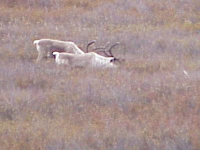
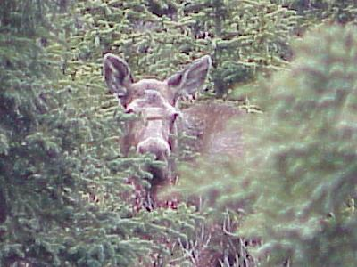
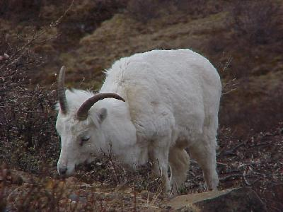
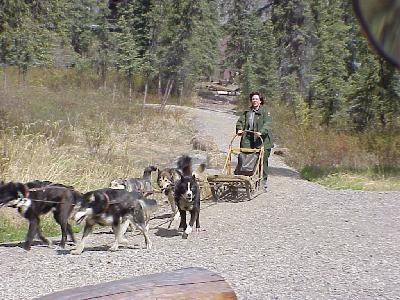

June 2, 5505 miles
| No driving, by us, today. We took one of the Denali Park bus tours, where you ride, along with ~50 others, through the park on a closed road. At first this did not sound all that great (other than the fact there is little other way to get into the park, without walking), but the tour offered a lot of wild life viewing opportunities. | |
| Wild life today included seeing caribou. These two were out eating some of the moss and lichen that grows in the taiga. |  |
| Many of the animals we saw were a ways off the road, and while offering excellent binocular viewing opportunities, did not offer good picture taking perspectives. This moose was an exception, peeking out at us through the pines. |  |
| We saw Dall Sheep in great numbers, often with lambs amoung the group. This sheep was grazing just off the road, most of the groups with young were out of camera range, but again easly viewed with binoculars. |  |
| After a long day on the bus, we took a break from the wild life viewing and took in a dog sled demonstration put on by the National Park Service Rangers. The dogs are actually used, in dog sled service, here in the park by the rangers during the winter months. |  |
| Wildlife for the day included: moose (3);
dall sheep (tons); caribou (bunches); red fox (1); arctic
ground squirrel (bunch); ptarmigans--the Alaska state
bird (dozen); and hoary marmot (1). Unluckily; the clouds did not cooperate, we did not get a view of Mt. McKinley. Just some incidental miles today. |
|